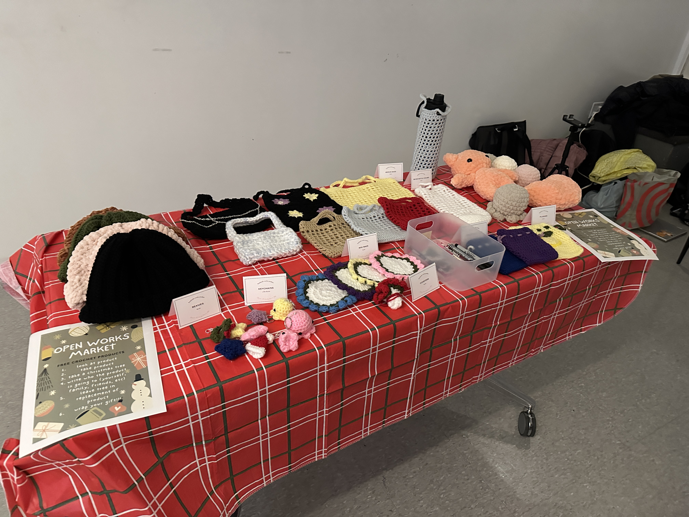
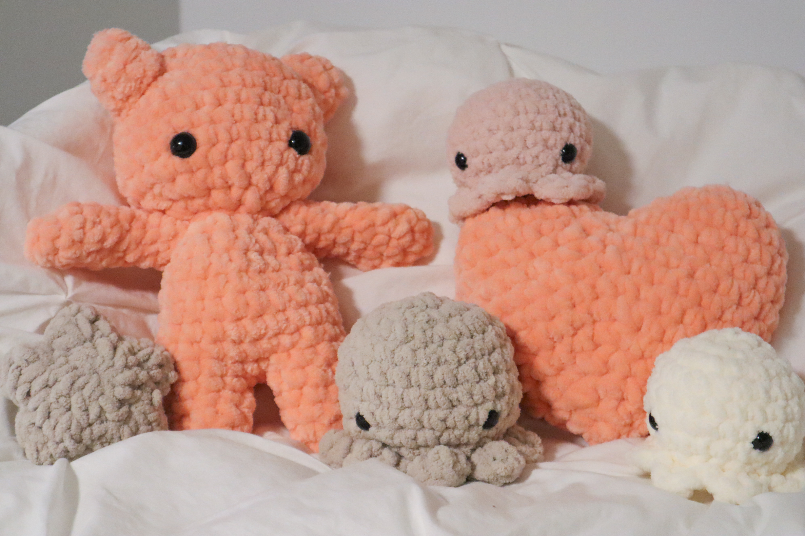

Welcome to my hobby gallery where anyone can learn the hobbies I enjoy through this interactive experience.
I love to crochet and whenever I get the chance, I create crochet clothes, accesories, toys, etc.
these are works from my TIME finals from my first year
I created enough objects to give to each one of my classmates before the semester ended and gave it out through a holiday market I created
I want to show that art can use variety of mediums and it is not confined to specifics
Try clicking on the objects and hovering over the materials to see what they are.
Some images are clickable and will lead you to a new page.
Watch the videos for the base if a video is provided.